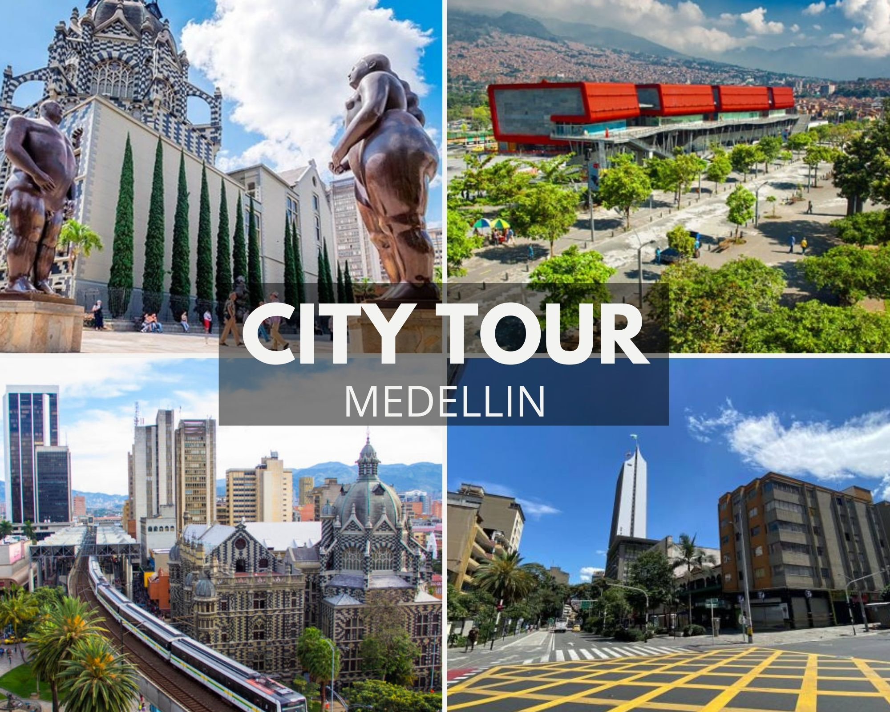
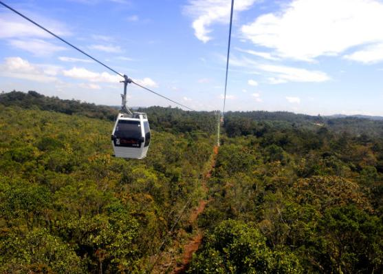

Medellin
What to do in Medellin?
City Tour
Medellín is a city with great cultural activity during the day and at night. It has 22 museums, more than 25 centers shopping centers and specialized medical centers that make it ideal for health tourism. The city draws attention for the development of works that make it inclusive. The Metro, the Metro Cables, the Metroplus, the Tram, cycle routes, escalators and cultural centers also welcome travelers that come to the city.
Graffiti Tour

Commune 13 of the city of Medellín has great tourist and cultural activity; presents us with social transformation and artistic that it has had, through an urban renewal through art, crossing the barrier of historical contingencies and positioning itself as an attractive, innovative and successful place to learn more about culture paisa. The Graffiti Tour promotes the development of works and graffiti that make construction and transformation inclusive social and cultural of Medellín.
Parque Arvi Tour
The Arví Regional Ecotourism Park (Parque Arví), is located 30 km from the center of Medellín (Colombia) in the district of Santa Elena and the municipality of Guarne (Antioquia - Colombia). It is an open park developed in properties for public use, created for the enjoyment of the entire local, national and international community, which through the construction of an organized tourist offer, allows consolidating a strategy of conservation and promotion of the potentialities and strengths of the township, exalting its cultural and environmental wealth as well as its heritage archaeological, the Silletera tradition and the entrepreneurship of its people, through a nature tourism proposal sustainable.
Pueblito Paisa Tour

The Pueblito Paisa of Medellín is one of the most visited tourist sites in the city that combines three elements that
We all love: the Antioquia tradition that is reflected in the crafts, gastronomy and architecture of the place; the view
majestic view of Medellín and the mountains that run through the Aburrá Valley.
It is one of the tutelary hills of Medellín and is located at the top of Cerro Nutibara; with an extension of 33
hectares and a height of 80 meters above the city level.